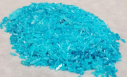
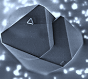
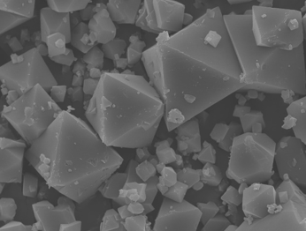
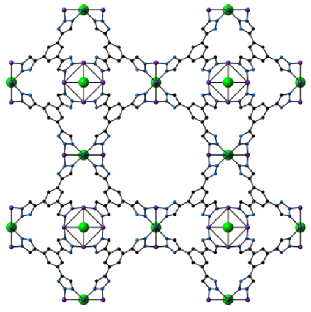

MOFs are versatile materials that possess a lot of potential for various applications. Their crystalline structure creates a uniform, well-defined, highly porous framework. Their unprecedented tunability allows synthetic chemists to modify them for their specific needs, allowing them to act as a sort of “designer material”. Specifically, our group is interesting in using MOFs in applications such as atmospheric water harvesting, gas capture, and catalysis.



